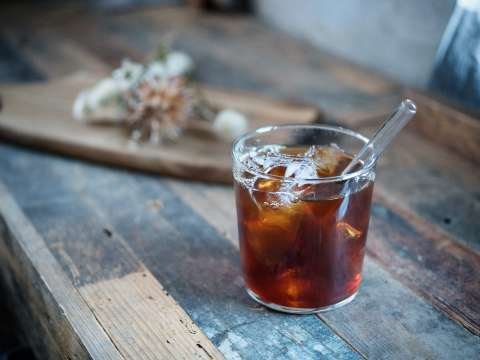
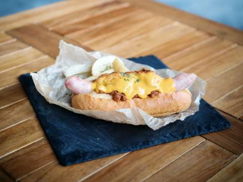
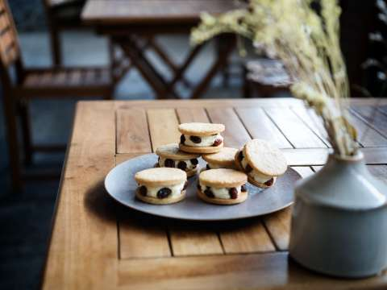
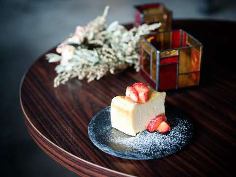

MENU
メニュー
-

- アメリカーノ
- 浅煎りの豆をこだわりの配合でブレンドした、スッキリと爽やかな飲み口の当店看板メニュー。ホッとでもアイスでも。
¥420
AMERICANO
-

- カフェラテ
- エスプレッソとミルク、この組み合わせに勝るものはなかなか見つかりません。ホッとしたいとき、やっぱりラテが欲しくなる。
¥460
CAFE LATTE
-

- レモネード
- 瀬戸内海に浮かぶ小島で、オーナー自らが栽培したとっておきのレモンを、たっぷりと使った自慢のレモネードです。
¥420
LEMONADE
-

- ホットドッグ - チリ
- ちょっと小腹が空いた時、あると嬉しいホットドッグ。特製チリソースとチーズをかければ、もう言葉はいりません。
¥540
HOTDOG CHILI
-

- レーズンバターサンド
- コーヒーに合うお菓子を追求して生まれた当店の大人気メニュー。数量・季節ともに限定のため、見つけたらお試しを。
¥480
RAISIN BUTTER SAND
-

- チーズケーキ
- クセのないマイルドな風味と、柔らかでクリーミーな口どけのチーズを使用した定番メニュー。イチゴは自家菜園で採れたオーガニック。
¥480
CHEESCAKE